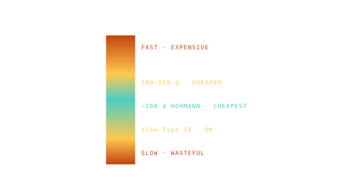

Time-of-Flight Axis
How long the trip takes — running up the Y-axis, in days for inner planets and years for the outer ones.

101 · zoom in
If the X-axis tells you WHEN you leave, the Y-axis tells you HOW LONG the trip takes. Bottom of the chart: fast, short trips. Top of the chart: slow, long trips. For Mars-class destinations the axis spans roughly 100 to 500 days. For Jupiter it's years.
Now you can read the entire trade-off in one glance. Walk straight up a column on the porkchop — that's the SAME launch date but different transit times. Near the bottom (fast trip) the cells turn red — fast trips are expensive because you're forcing a steep transfer ellipse. Higher up (slower trip) the cells go cool blue — that's the natural Hohmann band where the math wants the trip to take.
This is why a Hohmann transfer to Mars is always around 8.5 months. Pull below that and you're paying steeply for the speed. Pull way above and you're loitering for no reason. The porkchop visualises that trade-off as a colour gradient up each column. Cargo missions can afford slow; crew missions usually can't, because every extra month is more food, water, oxygen, and radiation exposure.
Y-axis is transit duration. For Mars-class targets the natural Hohmann transit is ~250 days, so Orrery's Y range runs roughly 100-500 days. For Jupiter or Saturn the Hohmann transit is years, so the axis is in years.
Different rows on the porkchop trade transit time against ∆v cost. The cheapest cells (Hohmann band) sit at the natural Hohmann transit time. Pull the transit time down (faster trip) and the ∆v cost climbs steeply. Pull it up (slower trip) and you get cheaper but slower options — sometimes worth it for cargo or non-time-sensitive payloads.
The shape of the cheap zone tells you about trade-offs. A narrow Hohmann band means the optimum is sharp; a wide cheap zone means you have flexibility. Mars's porkchop has a narrow optimum. Jupiter's wider — the gravity assist landscape spreads launch options across more dates.
SEE IN THE APP
- /plan Y axis on the porkchop is TIME OF FLIGHT